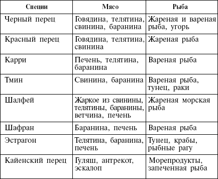

Специи придадут диете пикантность

Специи, или пряности, как правило, не имеют большой пищевой ценности, они малокалорийны. Но в кухне любой страны мира важное место отводится этим порошочкам, травкам, корешкам, одна щепотка которых придает даже самым простым блюдам необычайный, изысканный вкус и соблазнительный аромат. Врачи-диетологи тоже отдают должное пряностям. Ведь в них содержатся необходимые для здоровья микроэлементы, которые возбуждают аппетит, способствуют выделению желудочного сока, улучшают пищеварение, благотворно влияют на организм. В низкоуглеводной диете пряности и специи вполне допустимы. Согласитесь, было бы странно, пропагандируя эту «приятную и вкусную» диету, о твергать специи. Главное, учитывать, как действуют на организм те или иные приправы, к какому блюду какие специи подходят, и, конечно, не забывать, что во всем надо знать меру.
Что представляют из себя специи? Из чего их делают? Это вещества растительного происхождения. Специи в основном получают из трав, кореньев, сушеных плодов и тертых орехов. Все знают, что специй нужно совсем чуть-чуть для придания блюду желаемого вкуса и аромата. Выражение «кашу маслом не испортишь» для специй не подходит – с ними можно переусердствовать и попросту «забить» истинный вкус пищи. Например, перец – если его положить больше меры, от трапезы придется вовсе отказаться. Однако в малых количествах он может быть не только аппетитным, но и полезным. Перец – это поистине универсальная приправа! В самом шикарном ресторане и в дешевой забегаловке на столике стоят соль и перец (как минимум). Скорее всего то же самое и у вас на кухне. Черный, белый и зеленый перец – это одно и то же растение, разница в сроках сбора и в методах приготовления приправы. Кайенский перец (красный) может быть очень «огнеопасным», поэтому с ним нужно быть особенно осторожными. Кайенский перец обычно добавляют к мясу.
Некоторые специи могут использоваться как лекарственные средства. Эфирные масла шалфея, базилика, тимьяна, фенхеля, эвкалипта, чеснока и гвоздики обладают сильным противомикробным действием. Эти специи особенно актуальны в период простуд. Даже сушеные травы проявляют активность в отношении микробов, обеспечивая вам защиту от инфекции.
Многие пряности действуют возбуждающе – корица, гвоздика, анис, кардамон. Они снижают усталость и повышают тонус. Так что эти специи незаменимы зимой, когда из-за холодов и недостатка солнечного света многие подвержены депрессиям и просто часто находятся в плохом настроении, чувствуют утомление. В морозный день чашка кофе с щепоткой корицы вернет вам бодрость духа и придаст оптимизма! А бокал горячего глинтвейна с пряностями спасет ваши тело и душу от промозглой стужи и апатии. Только не добавляйте в глинтвейн сахар, если собираетесь худеть. Так вот, наверное, именно благодаря возбуждающим свойствам, эти специи традиционно используются в рождественских пряниках и пирогах. Но не рекомендуется употреблять корицу в больших количествах – она может вызвать бессонницу и расстройство желудка.
При хранении специй необходимо соблюдать некоторые правила, тогда они смогут спокойно пролежать на вашей кухне от 2 до 5 лет. Чем крупнее специи, тем дольше сохраняется их аромат. То есть, к примеру, целый мускатный орех будет храниться гораздо дольше, чем порошок из него. Так же и с перцем (молотый или в горошинах). Измельченные специи теряют свой первоначальный аромат уже через несколько недель. Поэтому лучше потереть или размолоть их непосредственно перед употреблением. Специи нужно хранить в сухом, темном и хорошо проветриваемом месте. «Чистые» специи хранятся дольше, чем смеси.
Какие специи к каким блюдам подходят? Конечно, у всех есть свои, индивидуальные, вкусовые пристрастия. И все же существуют общие тенденции применения специй. Вот некоторые рекомендации по использованию приправ, которые помогут вам не растеряться, оказавшись на кухне один на один с набором бесчисленных баночек. Пряности подчинятся вам, и вкус вашего блюда будет гарантированно утонченным и изысканным.

Помните, что в горячем блюде сложно почувствовать, достаточно ли специй. Высокая температура снижает чувствительность вкусовых рецепторов языка. Поэтому, если вам кажется, что в супе или соусе чего-то не хватает, чтобы не ошибиться, остудите в ложке немного готового блюда перед тем, как добавлять еще специй.